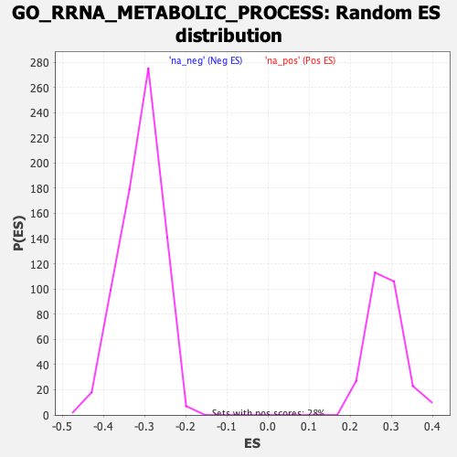

| | | Dataset | DE_genes |
| Phenotype | NoPhenotypeAvailable |
| Upregulated in class | na_neg |
| GeneSet | GO_RRNA_METABOLIC_PROCESS |
| Enrichment Score (ES) | -0.51886773 |
| Normalized Enrichment Score (NES) | -1.6764724 |
| Nominal p-value | 0.0 |
| FDR q-value | 0.09549743 |
| FWER p-Value | 0.819 |
Table: GSEA Results Summary
 Fig 1: Enrichment plot: GO_RRNA_METABOLIC_PROCESS
Fig 1: Enrichment plot: GO_RRNA_METABOLIC_PROCESS
Profile of the Running ES Score & Positions of GeneSet Members on the Rank Ordered List
| PROBE | GENE SYMBOL | GENE_TITLE | RANK IN GENE LIST | RANK METRIC SCORE | RUNNING ES | CORE ENRICHMENT | | 1 | NOP10 | | | 325 | 2.613 | -0.0050 | No |
| 2 | XRN1 | | | 327 | 2.585 | 0.0110 | No |
| 3 | ERI1 | | | 778 | 1.144 | -0.0113 | No |
| 4 | RPS24 | | | 1652 | 0.452 | -0.0657 | No |
| 5 | ZNHIT6 | | | 1668 | 0.447 | -0.0639 | No |
| 6 | EXOSC3 | | | 1730 | 0.415 | -0.0653 | No |
| 7 | RPL35A | | | 1767 | 0.401 | -0.0652 | No |
| 8 | RRP15 | | | 1864 | 0.364 | -0.0692 | No |
| 9 | RPS21 | | | 1904 | 0.353 | -0.0695 | No |
| 10 | POP4 | | | 2062 | 0.307 | -0.0779 | No |
| 11 | DIMT1 | | | 2105 | 0.296 | -0.0788 | No |
| 12 | RPP40 | | | 2282 | 0.247 | -0.0888 | No |
| 13 | RCL1 | | | 2322 | 0.240 | -0.0898 | No |
| 14 | RPL26 | | | 2347 | 0.233 | -0.0900 | No |
| 15 | DDX10 | | | 2472 | 0.214 | -0.0968 | No |
| 16 | RPS27 | | | 2559 | 0.198 | -0.1012 | No |
| 17 | KRR1 | | | 2681 | 0.179 | -0.1080 | No |
| 18 | PA2G4 | | | 2752 | 0.168 | -0.1115 | No |
| 19 | NSA2 | | | 2988 | 0.141 | -0.1260 | No |
| 20 | RPF2 | | | 3011 | 0.138 | -0.1266 | No |
| 21 | EMG1 | | | 3258 | 0.116 | -0.1420 | No |
| 22 | SLFN14 | | | 3578 | 0.093 | -0.1623 | No |
| 23 | NOL11 | | | 3789 | 0.082 | -0.1755 | No |
| 24 | PIH1D2 | | | 4088 | 0.065 | -0.1946 | No |
| 25 | BTRC | | | 4214 | 0.057 | -0.2025 | No |
| 26 | FCF1 | | | 4349 | 0.050 | -0.2109 | No |
| 27 | WDR3 | | | 4374 | 0.049 | -0.2122 | No |
| 28 | SHQ1 | | | 4661 | 0.034 | -0.2307 | No |
| 29 | MPHOSPH6 | | | 5071 | 0.012 | -0.2574 | No |
| 30 | RPUSD1 | | | 5286 | 0.002 | -0.2714 | No |
| 31 | SLFN13 | | | 5594 | -0.015 | -0.2914 | No |
| 32 | RPL27 | | | 5754 | -0.023 | -0.3017 | No |
| 33 | RPL11 | | | 5981 | -0.038 | -0.3163 | No |
| 34 | DDX49 | | | 5999 | -0.039 | -0.3171 | No |
| 35 | ERCC2 | | | 6046 | -0.042 | -0.3199 | No |
| 36 | EXOSC5 | | | 6132 | -0.048 | -0.3251 | No |
| 37 | ISG20 | | | 6203 | -0.053 | -0.3294 | No |
| 38 | DDX27 | | | 6321 | -0.060 | -0.3367 | No |
| 39 | RSL1D1 | | | 6402 | -0.065 | -0.3415 | No |
| 40 | NHP2 | | | 6755 | -0.092 | -0.3640 | No |
| 41 | RPP38 | | | 6860 | -0.099 | -0.3702 | No |
| 42 | EXOSC9 | | | 6900 | -0.103 | -0.3721 | No |
| 43 | UTP14A | | | 6902 | -0.103 | -0.3715 | No |
| 44 | RRNAD1 | | | 6929 | -0.105 | -0.3726 | No |
| 45 | MAPT | | | 6940 | -0.106 | -0.3726 | No |
| 46 | GAR1 | | | 7027 | -0.113 | -0.3775 | No |
| 47 | RPS15 | | | 7097 | -0.118 | -0.3813 | No |
| 48 | UTP15 | | | 7129 | -0.121 | -0.3826 | No |
| 49 | RPF1 | | | 7197 | -0.127 | -0.3861 | No |
| 50 | BOP1 | | | 7354 | -0.141 | -0.3955 | No |
| 51 | RPS7 | | | 7518 | -0.153 | -0.4052 | No |
| 52 | RRS1 | | | 7688 | -0.170 | -0.4152 | No |
| 53 | RPP30 | | | 7700 | -0.171 | -0.4149 | No |
| 54 | RPL35 | | | 7729 | -0.173 | -0.4156 | No |
| 55 | DIS3L | | | 7732 | -0.173 | -0.4147 | No |
| 56 | DDX21 | | | 7780 | -0.177 | -0.4167 | No |
| 57 | HELQ | | | 7847 | -0.184 | -0.4198 | No |
| 58 | RIOK1 | | | 7867 | -0.186 | -0.4199 | No |
| 59 | LSM6 | | | 7924 | -0.191 | -0.4224 | No |
| 60 | FDXACB1 | | | 7970 | -0.195 | -0.4241 | No |
| 61 | NOL9 | | | 7989 | -0.197 | -0.4241 | No |
| 62 | NVL | | | 7993 | -0.197 | -0.4231 | No |
| 63 | UTP23 | | | 8216 | -0.219 | -0.4362 | No |
| 64 | IMP3 | | | 8236 | -0.222 | -0.4361 | No |
| 65 | MRPS11 | | | 8269 | -0.226 | -0.4368 | No |
| 66 | DDX52 | | | 8274 | -0.226 | -0.4356 | No |
| 67 | SUV39H1 | | | 8322 | -0.231 | -0.4373 | No |
| 68 | DDX17 | | | 8575 | -0.259 | -0.4522 | No |
| 69 | FRG1 | | | 8677 | -0.271 | -0.4571 | No |
| 70 | EXOSC1 | | | 8861 | -0.293 | -0.4672 | No |
| 71 | NPM3 | | | 8967 | -0.305 | -0.4722 | No |
| 72 | NSUN3 | | | 8989 | -0.309 | -0.4717 | No |
| 73 | TRMT112 | | | 9056 | -0.318 | -0.4740 | No |
| 74 | NAF1 | | | 9074 | -0.320 | -0.4731 | No |
| 75 | DDX18 | | | 9299 | -0.347 | -0.4856 | No |
| 76 | RPS2 | | | 9313 | -0.348 | -0.4843 | No |
| 77 | YBEY | | | 9325 | -0.350 | -0.4829 | No |
| 78 | EXOSC6 | | | 9733 | -0.408 | -0.5070 | No |
| 79 | RPS8 | | | 9787 | -0.415 | -0.5079 | No |
| 80 | EXOSC2 | | | 9801 | -0.418 | -0.5061 | No |
| 81 | DEDD2 | | | 9884 | -0.430 | -0.5088 | No |
| 82 | NOB1 | | | 9908 | -0.433 | -0.5076 | No |
| 83 | NGDN | | | 9961 | -0.441 | -0.5083 | No |
| 84 | SBDS | | | 10054 | -0.455 | -0.5115 | No |
| 85 | RPS6 | | | 10101 | -0.462 | -0.5116 | No |
| 86 | TSR2 | | | 10157 | -0.471 | -0.5123 | No |
| 87 | GTF2H5 | | | 10256 | -0.484 | -0.5157 | No |
| 88 | POP7 | | | 10267 | -0.486 | -0.5133 | No |
| 89 | DKC1 | | | 10353 | -0.499 | -0.5158 | Yes |
| 90 | HEATR1 | | | 10374 | -0.501 | -0.5140 | Yes |
| 91 | TFB1M | | | 10386 | -0.503 | -0.5115 | Yes |
| 92 | RPS16 | | | 10412 | -0.507 | -0.5100 | Yes |
| 93 | XRN2 | | | 10493 | -0.518 | -0.5120 | Yes |
| 94 | UTP14C | | | 10499 | -0.519 | -0.5091 | Yes |
| 95 | WBP11 | | | 10524 | -0.524 | -0.5074 | Yes |
| 96 | DHX37 | | | 10535 | -0.525 | -0.5048 | Yes |
| 97 | UTP18 | | | 10581 | -0.534 | -0.5045 | Yes |
| 98 | DDX54 | | | 10603 | -0.539 | -0.5025 | Yes |
| 99 | RRP1B | | | 10620 | -0.541 | -0.5002 | Yes |
| 100 | FTSJ3 | | | 10731 | -0.558 | -0.5039 | Yes |
| 101 | MRM1 | | | 10811 | -0.569 | -0.5055 | Yes |
| 102 | METTL15 | | | 10892 | -0.580 | -0.5072 | Yes |
| 103 | EXOSC10 | | | 10901 | -0.582 | -0.5041 | Yes |
| 104 | NOL10 | | | 10927 | -0.587 | -0.5020 | Yes |
| 105 | ZCCHC4 | | | 10981 | -0.594 | -0.5018 | Yes |
| 106 | RRP8 | | | 11005 | -0.598 | -0.4996 | Yes |
| 107 | RPS14 | | | 11038 | -0.604 | -0.4979 | Yes |
| 108 | ZNHIT3 | | | 11040 | -0.604 | -0.4942 | Yes |
| 109 | TRMT61B | | | 11061 | -0.608 | -0.4918 | Yes |
| 110 | WDR12 | | | 11065 | -0.609 | -0.4882 | Yes |
| 111 | RIOK3 | | | 11078 | -0.611 | -0.4852 | Yes |
| 112 | MRPL1 | | | 11093 | -0.614 | -0.4822 | Yes |
| 113 | ERI3 | | | 11184 | -0.632 | -0.4842 | Yes |
| 114 | GEMIN4 | | | 11283 | -0.653 | -0.4866 | Yes |
| 115 | NOP14 | | | 11419 | -0.683 | -0.4911 | Yes |
| 116 | PELP1 | | | 11453 | -0.688 | -0.4890 | Yes |
| 117 | CHD7 | | | 11511 | -0.701 | -0.4884 | Yes |
| 118 | TBL3 | | | 11557 | -0.710 | -0.4869 | Yes |
| 119 | METTL16 | | | 11567 | -0.712 | -0.4831 | Yes |
| 120 | UTP3 | | | 11582 | -0.716 | -0.4795 | Yes |
| 121 | RPS19 | | | 11606 | -0.721 | -0.4765 | Yes |
| 122 | NUDT16 | | | 11702 | -0.743 | -0.4781 | Yes |
| 123 | WDR36 | | | 11749 | -0.750 | -0.4765 | Yes |
| 124 | RPUSD2 | | | 11766 | -0.755 | -0.4728 | Yes |
| 125 | DROSHA | | | 11882 | -0.780 | -0.4755 | Yes |
| 126 | THUMPD1 | | | 11906 | -0.787 | -0.4721 | Yes |
| 127 | MRTO4 | | | 12009 | -0.807 | -0.4738 | Yes |
| 128 | RPP25 | | | 12074 | -0.819 | -0.4729 | Yes |
| 129 | EIF4A3 | | | 12080 | -0.822 | -0.4681 | Yes |
| 130 | RPL5 | | | 12168 | -0.846 | -0.4685 | Yes |
| 131 | LYAR | | | 12221 | -0.859 | -0.4666 | Yes |
| 132 | NOL6 | | | 12306 | -0.879 | -0.4666 | Yes |
| 133 | DIS3 | | | 12370 | -0.893 | -0.4652 | Yes |
| 134 | WDR46 | | | 12425 | -0.911 | -0.4630 | Yes |
| 135 | NSUN5 | | | 12428 | -0.912 | -0.4575 | Yes |
| 136 | WDR55 | | | 12519 | -0.933 | -0.4576 | Yes |
| 137 | NOP58 | | | 12570 | -0.945 | -0.4550 | Yes |
| 138 | WDR18 | | | 12579 | -0.947 | -0.4496 | Yes |
| 139 | SRFBP1 | | | 12604 | -0.954 | -0.4452 | Yes |
| 140 | RPL7 | | | 12668 | -0.972 | -0.4433 | Yes |
| 141 | SART1 | | | 12718 | -0.987 | -0.4404 | Yes |
| 142 | NOC4L | | | 12727 | -0.990 | -0.4347 | Yes |
| 143 | BYSL | | | 12743 | -0.995 | -0.4295 | Yes |
| 144 | DDX51 | | | 12794 | -1.011 | -0.4265 | Yes |
| 145 | FBL | | | 12803 | -1.013 | -0.4207 | Yes |
| 146 | NOP2 | | | 12818 | -1.016 | -0.4153 | Yes |
| 147 | NOLC1 | | | 12823 | -1.018 | -0.4092 | Yes |
| 148 | TFB2M | | | 12838 | -1.025 | -0.4038 | Yes |
| 149 | UTP20 | | | 12875 | -1.037 | -0.3997 | Yes |
| 150 | RRP9 | | | 12953 | -1.062 | -0.3981 | Yes |
| 151 | RPL10A | | | 12973 | -1.068 | -0.3927 | Yes |
| 152 | WDR43 | | | 13061 | -1.094 | -0.3916 | Yes |
| 153 | REXO4 | | | 13071 | -1.097 | -0.3853 | Yes |
| 154 | RRP36 | | | 13214 | -1.144 | -0.3875 | Yes |
| 155 | MDN1 | | | 13291 | -1.171 | -0.3852 | Yes |
| 156 | TSR3 | | | 13463 | -1.239 | -0.3887 | Yes |
| 157 | RPS9 | | | 13648 | -1.312 | -0.3926 | Yes |
| 158 | RPL14 | | | 13672 | -1.319 | -0.3859 | Yes |
| 159 | RBFA | | | 13674 | -1.320 | -0.3777 | Yes |
| 160 | EXOSC4 | | | 13695 | -1.328 | -0.3708 | Yes |
| 161 | RPL7A | | | 13738 | -1.354 | -0.3651 | Yes |
| 162 | POP5 | | | 13777 | -1.372 | -0.3591 | Yes |
| 163 | GTPBP4 | | | 13815 | -1.385 | -0.3529 | Yes |
| 164 | ABT1 | | | 13817 | -1.386 | -0.3443 | Yes |
| 165 | C1D | | | 13819 | -1.387 | -0.3357 | Yes |
| 166 | IMP4 | | | 13834 | -1.394 | -0.3280 | Yes |
| 167 | SENP3 | | | 13872 | -1.409 | -0.3216 | Yes |
| 168 | BMS1 | | | 13892 | -1.419 | -0.3140 | Yes |
| 169 | NAT10 | | | 13962 | -1.451 | -0.3095 | Yes |
| 170 | LAS1L | | | 13997 | -1.470 | -0.3026 | Yes |
| 171 | EXOSC8 | | | 14002 | -1.471 | -0.2937 | Yes |
| 172 | TEX10 | | | 14027 | -1.484 | -0.2860 | Yes |
| 173 | RPL7L1 | | | 14049 | -1.499 | -0.2781 | Yes |
| 174 | PDCD11 | | | 14180 | -1.591 | -0.2767 | Yes |
| 175 | PIH1D1 | | | 14223 | -1.614 | -0.2694 | Yes |
| 176 | PELO | | | 14314 | -1.667 | -0.2649 | Yes |
| 177 | FAM207A | | | 14319 | -1.671 | -0.2548 | Yes |
| 178 | PWP2 | | | 14384 | -1.706 | -0.2483 | Yes |
| 179 | WDR75 | | | 14397 | -1.715 | -0.2385 | Yes |
| 180 | DCAF13 | | | 14578 | -1.851 | -0.2387 | Yes |
| 181 | ISG20L2 | | | 14666 | -1.933 | -0.2324 | Yes |
| 182 | ESF1 | | | 14667 | -1.934 | -0.2203 | Yes |
| 183 | PES1 | | | 14669 | -1.936 | -0.2084 | Yes |
| 184 | RIOK2 | | | 14708 | -1.984 | -0.1985 | Yes |
| 185 | DDX56 | | | 14784 | -2.050 | -0.1907 | Yes |
| 186 | NSUN4 | | | 14786 | -2.051 | -0.1780 | Yes |
| 187 | KRI1 | | | 14850 | -2.106 | -0.1690 | Yes |
| 188 | DDX47 | | | 14885 | -2.142 | -0.1579 | Yes |
| 189 | NOL8 | | | 14986 | -2.285 | -0.1502 | Yes |
| 190 | RRP1 | | | 15028 | -2.340 | -0.1383 | Yes |
| 191 | URB1 | | | 15074 | -2.416 | -0.1262 | Yes |
| 192 | EBNA1BP2 | | | 15077 | -2.423 | -0.1113 | Yes |
| 193 | UTP6 | | | 15082 | -2.438 | -0.0964 | Yes |
| 194 | MPHOSPH10 | | | 15160 | -2.558 | -0.0855 | Yes |
| 195 | EXOSC7 | | | 15186 | -2.621 | -0.0708 | Yes |
| 196 | TSR1 | | | 15198 | -2.663 | -0.0550 | Yes |
| 197 | RRP7A | | | 15213 | -2.701 | -0.0391 | Yes |
| 198 | RPS28 | | | 15240 | -2.750 | -0.0236 | Yes |
| 199 | NOP56 | | | 15249 | -2.789 | -0.0068 | Yes |
| 200 | WDR74 | | | 15380 | -3.419 | 0.0060 | Yes |
Table: GSEA details [plain text format]

Fig 2: GO_RRNA_METABOLIC_PROCESS: Random ES distribution
Gene set null distribution of ES for GO_RRNA_METABOLIC_PROCESS